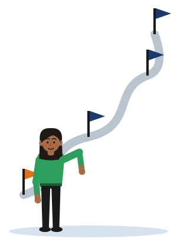
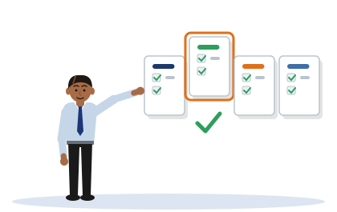
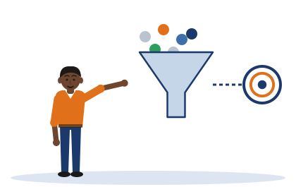

Session 1 notes
Launch, Topic Selection and Research-Question Formation
These are the notes for Session 1. They show you how to turn a topic that interests you into a research question that a project can answer.
- how the thirteen weeks fit together, and what Session 1 is for
- how to choose a topic that is small enough to finish
- how to turn that topic into a research question you can test
- how one aim differs from its objectives
- what the first marking criterion looks for in your question
[Illustrative example - do not cite]
Seven invented students appear in Session 1. None of them is real, and neither are their organisations.
Tharindu, Chathura and Dilini each have a complete example project. Kavindu, Pasan and Ishara each show one weak question and how it is repaired. Ruwan's draft is there for you to judge.
The plain text on this page is the Session 1 student notes, word for word. It is the same text as the notes document you receive in class.
The coloured boxes are extra help. They give a short summary in plain English, explain the pictures and phrases the notes use, and let you test yourself.
If a box and the notes ever seem to disagree, follow the notes and tell your lecturer.
1. Why This Session Matters
You already know how to build things. This session teaches a different skill.
The skill is to say exactly what problem you will study, as a question that a project can answer. The notes call this skill framing.
Words you will meet in this section
- Framing
- Deciding exactly what your project will study, and what it will leave out.
- Cohort
- One year's group of students on a programme.
- Criterion
- One of the headings your work is marked against. The plural is criteria.
- Rubric
- The table that describes, for each criterion, what work in each band looks like.
- Band
- A range of marks with a name: Fail, Pass, Merit or Distinction.
- Checkpoint
- A point in the module where you hand in work and receive feedback.
You are a capable builder. You can configure, implement and operate security and networking systems. That is the foundation this programme is built on. What this module develops is a different skill: research-level problem framing - defining a problem precisely, turning it into an achievable question, and differentiating an aim from a set of measurable objectives.
The evidence for this gap is concrete. The previous cohort on this programme clustered at the Pass band on the Research Question criterion specifically, while often performing at Merit or Distinction on other rubric criteria. The weakness was not technical ability; it was the ability to frame a technical problem as a researchable claim. Session 1 attacks that gap directly.
The thesis of this session: you can already build. This module grows a different muscle: framing. Today is your first rep.
How this session feeds the Week 3 checkpoint
The Week 3 Problem Outline checkpoint is the module's first forcing function. It is assessed against Criterion 1 of the rubric, revision is expected, and a weak question caught there is a weak question corrected before five weeks of subsequent work are built on top of it. Session 1 gives you the tools you need to arrive at Week 3 with a question that has a realistic chance of passing the first gate. The Week 2 supervision session is your question clinic: you bring a draft question, and it gets pulled apart and rebuilt. That process only works if you start drafting now.
Check yourself
The notes say that the previous cohort was weak on one criterion. Was the weakness technical?
No. The notes say that the same students often reached Merit or Distinction on other criteria. The weak point was framing: stating a technical problem as a claim that can be researched. That is the gap this session works on.
Why should you start drafting your question now, before the Week 2 clinic?
Because the clinic works on a draft. It takes your question apart and rebuilds it. With no draft there is nothing to work on, and you lose the one session designed to repair your question before the Week 3 checkpoint.
2. The Project Journey

The module has two parts. First you are taught the skills, in four sessions. Then you write your proposal with your supervisor's help.
The table shows what happens in each week.
Words you will meet in this section
- Notional student hours
- The total study time the module is designed for. It includes your own study, not only time in class.
- Front-loaded
- Placed near the beginning. The four taught sessions all come in the first seven weeks.
- Supervised production
- The weeks in which you write your proposal, with meetings with your supervisor.
- Viva voce
- A spoken examination: you answer questions about your work, face to face.
- Summative
- Marked, and counting towards your grade.
The module covers 13 weeks and 100 notional student hours. Four taught sessions are front-loaded into the first seven weeks; Weeks 8 to 12 are supervised production. The structure is deliberate: teach the skills, then support the build.
| Wk | Activity | Focus | Type |
|---|---|---|---|
| 1 | S1 - Today | Topic selection and research-question formation | Taught |
| 2 | Supervision | Research-question clinic - bring your draft | Supervised |
| 3 | Checkpoint 1 | Problem outline - research question assessed, revision expected | Assessed |
| 4 | S2 | Critical literature review - framing against the known | Taught |
| 6 | S3 | Methodology, tooling and evaluation design | Taught |
| 7 | S4 | Responsible practice, delivery planning and ethics | Taught |
| 8 | Checkpoint 2 | Full proposal draft - feedback across all five rubric criteria | Assessed |
| 12 | Checkpoint 3 | Summative submission (CW1) with completed ethics-approval evidence | Assessed |
| 13 | Defence | Presentation and viva voce - must-pass gate confirming authorship | Must-pass |
Each taught session approaches framing from a different angle. Session 1 teaches it head-on. Session 2 frames the problem against what is already known (the literature). Session 3 frames it as something testable (the methodology). Session 4 frames its boundaries and consequences (authorisation, legal exposure, and disclosure limits). The framing muscle is worked in every session; it is not a one-week topic. The journey does not stop at Week 13: passing the proposal defence bridges you into NB6019CEM Research Project Delivery, the follow-on module in which the project you have proposed here is actually built and evaluated. NB6015CEM has a single assessed component, CW1 at 100 per cent; the implementation belongs to the next module, not to this one.
Session 2, in Week 4, returns to framing through the literature: what is already known about your problem.
Session 3, in Week 6, turns your question into something you can test.
Session 4, in Week 7, deals with the boundaries: authorisation, legal exposure and disclosure limits.
The module map shows all thirteen weeks on one page.
Notice what this module does not ask for. You do not build the project here. The notes say that the implementation belongs to the next module.
That changes what a good question looks like. In this module a small question that you can clearly test is worth more than a large one that you cannot.
Check yourself
How many assessed components does NB6015CEM have?
One: CW1, at 100 per cent. The notes add that the implementation belongs to the next module, NB6019CEM Research Project Delivery, not to this one.
Look at the table. What happens in Week 2, and what should you bring?
Week 2 is supervision: the research-question clinic. The table says to bring your draft. A draft is all you need, even a weak one.
3. Choosing a Topic

A project in this module proposes something that you can build and test.
This section gives you four types of project, called archetypes. It then gives four tests that tell you whether a topic is the right size.
Last, it separates a topic from a research question. The notes call that the most important distinction in the module.
Words you will meet in this section
- Archetype
- A basic type that many examples follow. Here: one of four types of project.
- Tractable
- Possible to manage and finish with the time and tools you have.
- Testbed
- A small system that you build yourself in order to run tests safely.
- Baseline
- The thing you compare your result with: the starting state, or another method.
- Attack surface
- All the points at which a system can be attacked.
- Exploitability
- How easily a weakness can actually be used by an attacker.
- False-positive rate
- How often a tool raises an alarm when nothing is wrong.
- Proof-of-concept
- A small working version that shows the idea can work.
The four solution archetypes
A cybersecurity or network-engineering project proposes a concrete solution to a real technical problem. It is not a survey of the literature and it is not a risk assessment. Projects fall into one of four archetypes:
- Detection/monitoring tool - a system or module that identifies threats or anomalies in traffic, logs, or system behaviour. Evaluated by detection rate, false-positive rate, or similar precision-recall metrics.
- Hardening/defence framework - a structured set of configuration controls applied to a system or network to reduce its attack surface or exploitability. Evaluated by measuring the change in exploitability before and after applying the controls.
- Protocol/architecture design - the design or evaluation of a secure communication, authentication, or network architecture. Evaluated by measuring the security or performance properties of the design against an alternative.
- Security-testing methodology - a structured, repeatable approach to finding a defined class of vulnerability in a defined system type. Evaluated by comparing its coverage or efficiency against an unstructured or alternative approach.
These archetypes are not rigid boxes; the exemplars in Section 5 show how the same idea can take different forms. What matters is that the project proposes something concrete and that the proposed solution can be built and evaluated in a self-built, authorised testbed.
| Archetype | In plain words | Where you see it in these notes |
|---|---|---|
| Detection/monitoring tool | Something that notices an attack. | Exemplar A, Tharindu |
| Hardening/defence framework | Settings that make a system harder to attack. | Exemplar B, Chathura |
| Protocol/architecture design | A safer design for how systems connect or log in. | Transformation 2, Pasan |
| Security-testing methodology | A repeatable way to find one kind of weakness. | Exemplar C, Dilini |
- not rigid boxes
- The picture: Four boxes with hard walls. Each thing must go into exactly one box.
- Why it works: The notes use the picture to deny it. The four archetypes help you to think, but a real project can share features of two of them.
- Where it stops working: The archetypes are still useful limits. A project that fits none of them, such as a survey of the literature, is not a project for this module.
What makes a topic tractable and Level-6-scoped
A topic is tractable for a Level 6 project if it is:
- Bounded. The scope is clearly delimited - one system, one threat class, one control. "All hospitals" or "internet-connected devices in general" are not bounded topics. "A small Windows and Active Directory estate" is.
- Buildable in a testbed. The proposed solution can be implemented and evaluated in a self-built virtualised or laboratory environment. The project does not require access to a live third-party network, system, or dataset that you are not authorised to use.
- Evaluable against a baseline. There is a measurable before-and-after, or a comparison with an alternative approach. The question has an answer that is neither a simple yes/no nor untestable within the project timeline.
- Achievable in the time available. The core proof-of-concept is completable within the project timeline. Scope creep is the most common reason for project failure at Level 6; build in margin, not ambition.
- scope creep
- The picture: Something that moves so slowly that you do not see it move, like a plant growing across a wall.
- Why it works: A project rarely becomes too large in one decision. It grows by small additions, one more feature and one more test, and each one looks harmless.
- Where it stops working: Creeping sounds like something that happens to you. In a project each addition is a choice, so you can refuse it. That is why the notes tell you to build in margin.
- build in margin, not ambition
- The picture: The empty edge around the text on a page. Nothing is printed there, but the page needs it.
- Why it works: Margin in a plan is spare time with nothing in it. When something goes wrong, the spare time absorbs the delay.
- Where it stops working: A page margin stays empty. Plan margin is meant to be used when problems arrive, and they do arrive.
Topic vs research question
A topic names what you are interested in. A research question commits you to a specific, walkable path through it - one you can prove you have completed. This is the most important distinction in the module.
"Intrusion detection" is a topic. It says where you want to go. A research question says exactly which road you will take, how far you will travel, what the terrain looks like, and how you will know when you have arrived.
Analogy. A topic is a destination on a map. A research question is the specific, walkable route you commit to and can prove you completed. "Intrusion detection" is the destination. The strong question names the road, the distance, the terrain, and the arrival condition. If someone else could walk a completely different route to the same destination, your question is still a topic, not a question.
See the test in the analogy at work. In Five Pins every line on the map is a project that still fits the question. Each thing you pin removes one.
The last sentence of the analogy is a test, and it is strict on purpose. If two students could build two quite different projects that both answer your question, your question is still a topic.
Try the test on Exemplar A in Section 5. Tharindu's question fixes the technique, the threat, the environment, the metric and the baseline. Very little is left to choose. That is what the notes mean by a route.
Check yourself
Is "wireless security in universities" a bounded topic?
No. The notes ask for one system, one threat class and one control. "Universities" is a whole population, like "all hospitals" in the notes. "Wireless security" names no single threat and no single control. A bounded version names one network of one kind, and one problem on it.
A student plans to test a tool on their employer's live network. Which of the four tests does the topic fail?
Buildable in a testbed. The notes ask for a self-built virtualised or laboratory environment. The project must not need a live network, system or dataset that the student is not authorised to use.
"Intrusion detection": topic or research question? How do you know?
A topic. It says where you want to go, and nothing more. Two students could build completely different projects under that name, which is the test in the analogy.
4. Writing an Achievable Research Question

A question is ready when it passes four tests. It names exact things. It uses the real language of security work. One student can finish it in a lab. Its result can be measured and compared.
This section also separates the aim from the objectives. It ends with what the top band of the first criterion looks for.
Words you will meet in this section
- Aim
- The one result that the whole project works towards.
- Objective
- One step that you can measure. The objectives together deliver the aim.
- Evaluable
- Able to be tested, with a result you can measure and compare.
- Metric
- The thing you measure, such as a rate, a time or a count.
- Value judgement
- An opinion about whether something is good or bad, with no measure behind it.
- Paraphrase
- The same meaning in different words.
- Practitioner
- A person who does the work as a job, here a security professional.
The four properties
An achievable research question has four properties, each of which needs to be satisfied before the question can be called Level-6-ready:
- Specific. The question names the technique (not just the category), the threat class or problem type, and the system or protocol. "Machine learning" is a category; "a tree-based classifier trained on flow-level features" is specific. "Intrusion" is a category; "lateral-movement traffic in an enterprise LAN" is specific.
- Technically grounded. The question uses language a security practitioner would recognise without needing a research methods glossary. It draws on real domain mechanisms - specific protocols, attack techniques, detection approaches - not generic computing language. If the question could be written by someone with no security expertise, it is probably not technically grounded.
- Achievable at Level 6. The question is evaluable in a self-built virtualised testbed within the project timeline. Nothing in the question requires access to a live production system, classified data, or capabilities beyond what a capable Level 6 student can build in a lab. The word "prevent" is almost always a red flag at Level 6; "reduce the simulated spread of" or "detect at a given false-positive rate" are achievable as stated.
- Evaluable. The question includes a measurable outcome, a comparison or baseline, and a defined environment. A question without a baseline or comparison ("does X detect threats?") is not evaluable because there is no way to assess whether the result is good or bad. A question without a measurable outcome ("does X improve security?") is a value judgement, not a testable claim.
- a red flag
- The picture: A red flag raised on a beach or beside a railway. It means danger: stop and look.
- Why it works: Some words warn you that a question cannot be tested. The notes name "prevent". When you see such a word in your own question, stop and check it.
- Where it stops working: A red flag is a warning, not a proof. The notes say almost always, not always. The word tells you where to look. You still have to judge the question.
Test your own draft against these properties in the Research Question Self-Check. It is a mirror for your thinking, not a grader.
Aims vs objectives
The research question states the single, evaluable claim the project is working toward. The aim restates that claim as a project-level outcome. The objectives are the differentiated, measurable steps that together deliver the aim.
The most common error is listing three identical-sounding sentences as three aims, each phrased as "to investigate" or "to examine". That is one aim stated three times. Objectives are not paraphrases of the aim; they are the distinct, sequential actions that make the aim achievable.
[Illustrative example - do not cite]
Example aim (from Exemplar B, Chathura / Pahana Retail): To evaluate whether applying the CIS Windows secure-configuration baseline reduces the exploitability of a small Active Directory testbed.
Example objectives: (1) Establish an unhardened baseline testbed and document its attack surface using a defined set of common attack techniques. (2) Apply the CIS Windows configuration baseline to the testbed. (3) Measure the change in attack-technique success rate against the hardened state versus the baseline, and report the difference with supporting evidence.
Each objective describes a different action, in logical sequence, and the three together deliver the aim. That is the pattern to follow.
Can you tell an objective from the aim said twice? Sort Chathura's statements in One Aim, Three Objectives.
Look at how Chathura's three objectives begin: establish, apply, measure. Each one produces something that the next one needs.
Here is a test you can use on your own objectives. Remove one. If the aim can still be delivered without it, that objective was the aim in other words.
The Criterion 1 yardstick
Criterion 1 of the CW1 assessment rubric (Research Question and Problem Framing) is assessed at four bands. Distinction is your target. Paraphrased, it asks for this:
At Distinction (70 to 100%), the band looks for a question stated with precision and real technical specificity, anchored to a cybersecurity or network engineering problem you can point to in the world. It expects one aim alongside objectives that are visibly different from one another, each measurable, and sized for what one student can finish independently at Level 6. And it expects the technical setting to be described with the exactness a working practitioner would expect.
Every word in your question should earn its place. If the question could apply to any computing project, or if it can be answered by a quick literature search without building anything, it has not reached Distinction level. Run your question through the Self-Check tool to identify which property to fix first.
Criterion 1 is the part of the marking scheme that looks at your research question and at how you frame the problem. Your Week 3 Problem Outline is assessed against it.
In short, the top band wants three things. A question that is exact and technical, about a problem that exists. One aim, with objectives that differ from each other and can be measured. And a technical setting described exactly.
The notes give that band in their own words, just above this box.
- a yardstick
- The picture: A straight stick one yard long (about 91 centimetres), used to measure cloth or wood.
- Why it works: A yardstick is a fixed standard. You hold your work against it to see how far it reaches. The top band of Criterion 1 is the fixed standard for your question.
- Where it stops working: A yardstick gives one exact number. A band does not: it describes qualities, and your lecturer judges how far your question shows them.
- earn its place
- The picture: A player who must play well in every match to stay in the team.
- Why it works: Every word in a strong question does a job: it names the technique, the threat, the environment, the metric or the baseline. A word that names nothing should be removed or replaced.
- Where it stops working: The phrase is about precision, not about length. Kavindu's weak question is short and his strong one is long. The strong one is better because every part of it names something.
Check yourself
Which of the four properties does this question fail? "Does a firewall improve security?"
At least two. It is not specific: no technique, threat or system is named. It is not evaluable: "improve security" is a value judgement, with no measure and no baseline. The notes give almost the same example, "does X improve security?".
A student writes three aims: to investigate phishing, to examine phishing emails, and to explore phishing detection. What is wrong?
This is one aim stated three times. The notes call it the most common error. Objectives are not the aim in other words. They are different actions, in order, that together deliver the aim.
Why is "prevent" almost always a red flag at Level 6?
Because a student lab cannot show that something never happens. The notes offer wording that can be tested instead: "reduce the simulated spread of" or "detect at a given false-positive rate".
5. Worked Examples
This section has three parts. First, three complete examples of strong projects. Then three weak questions, each with its repair. Last, one draft for you to judge.
Read the repairs slowly. Each repair has a name, and the name is what you carry to your own question.
Words you will meet in this section
- Exemplar
- A model example, good enough to learn from.
- Transformation
- A change from one form into another. Here: from a weak question to a strong one.
- Value-laden
- Carrying an opinion. "Good" is a value-laden word.
- Unscoped
- With no limits stated.
- Operationalised
- Turned into something you can actually measure.
- Audit question
- A question answered by checking against a list, not by testing.
- Seeded flaw
- A weakness placed in a test system on purpose, so that you can count how many a method finds.
The examples in this section are the core self-study asset for this module. Re-read them before the Week 2 clinic. The transformations in particular show the editing move that takes a weak question to a strong one - that named move is what transfers the skill.
Exemplar A: Detection tool - retail banking (Tharindu)
Tharindu. The dots are failed-login alerts, and the laptop is the tool that sorts them.
Tharindu is working from the context of Sevana Bank's new mobile-banking app. The SOC receives a high volume of failed login alerts but cannot cheaply and reliably separate distributed credential-stuffing campaigns from ordinary users mistyping their passwords. Both produce similar surface-level signals.
Proposed solution: a lightweight detection module that scores each authentication event on three domain-specific features - velocity (attempt rate per source IP in a rolling window), device-fingerprint dispersion (how many distinct device profiles appear against a single user ID in a session), and failure-pattern similarity (how closely the sequence of failures matches a known stuffing signature). The module is trained on a combination of replayed captured traffic and synthetically generated traffic in a VM testbed; no production system is used at any stage.
Research question: "To what extent can an unsupervised, feature-based model detect distributed credential-stuffing against a mobile-banking authentication endpoint at a false-positive rate low enough for SOC triage, compared with a rate-limiting baseline?"
Why it works: it names the technique (unsupervised, feature-based model), the threat (distributed credential-stuffing), the environment (mobile-banking authentication endpoint, VM testbed), the metric (false-positive rate at SOC-triage threshold), and the baseline (rate-limiting). All five pinned.
| Pin | In plain words | In Tharindu's question |
|---|---|---|
| Technique | What he builds. | unsupervised, feature-based model |
| Threat | The attack it looks for. | distributed credential-stuffing |
| Environment | Where it is tested. | mobile-banking authentication endpoint, VM testbed |
| Metric | What is measured. | false-positive rate at SOC-triage threshold |
| Baseline | What it is compared with. | rate-limiting |
Exemplar B: Hardening framework - retail SME (Chathura)
Chathura. The rack is the small Windows estate, and the shield is the configuration baseline he applies.
Chathura is working from the context of Pahana Retail, a growing e-commerce business running a small Windows and Active Directory estate on out-of-the-box vendor defaults with no hardening baseline applied. The business has no security controls beyond a commercial antivirus subscription.
Proposed solution: apply the CIS Windows secure-configuration baseline (CIS Control 4, mapping to the NIST CSF Protect function) to the estate and measure the change in exploitability against a fixed set of common attack techniques, comparing the hardened state with the unhardened default, all in a self-built VM testbed.
Research question: "To what extent does applying the CIS Windows secure-configuration baseline reduce the success rate of a defined set of common attack techniques in a small Active Directory testbed, compared with an out-of-the-box default configuration?"
Teaching note: the spine of this project is measured exploitability before and after applying the baseline - not a compliance score. "Is the organisation CIS-compliant?" is an audit question and would produce a descriptive, non-evaluable answer. "Does the baseline reduce what an attacker can actually achieve against the testbed?" is a testable, evaluable technical claim. That distinction is exactly what Criterion 1 Distinction demands.
- the spine of this project
- The picture: The backbone of a body. Every other bone is attached to it.
- Why it works: One measurement holds Chathura's whole project together: what an attacker can do before the baseline is applied, and after. Every other part of the project attaches to that comparison.
- Where it stops working: A body is born with its spine. A project is not. You choose the spine, and the notes show that the wrong choice, a compliance score, gives a project with nothing to test.
The teaching note separates two questions that sound alike. "Is the organisation CIS-compliant?" is answered by reading a checklist. Nothing is tested.
"Does the baseline reduce what an attacker can actually achieve against the testbed?" can only be answered by attacking the testbed before and after.
A professional reading: compliance tells you what has been configured. Evaluation tells you whether the configuration helps. A research project needs the second.
Exemplar C: Testing methodology - healthcare API (Dilini)
Dilini. The checklist is her structured testing method, and the padlock is the authorisation it tests.
Dilini is working from the context of the Suwa Sevana Teaching Hospital patient portal, which exposes a FHIR-style REST API. Ad-hoc security testing by the in-house team keeps missing broken object-level authorisation vulnerabilities, partly because the testers lack a structured approach to the specific class of flaw.
Proposed solution: design and evaluate a structured, repeatable authorisation-testing methodology - a test taxonomy combined with a lightweight tooling harness - and evaluate it against a deliberately vulnerable FHIR-like API in a controlled laboratory environment, comparing its detection coverage against unstructured manual testing within a comparable time budget.
Research question: "Can a structured object-level-authorisation testing methodology, applied to a controlled FHIR-style patient-records API, detect a higher proportion of seeded authorisation flaws than unstructured manual testing within a comparable time budget?"
This exemplar covers the security-testing methodology archetype. Note that the environment is a deliberately vulnerable controlled lab (no patient data is involved at any point), the threat class is specific (broken object-level authorisation), and the evaluation strategy is a controlled comparison with a defined alternative.
Dilini's question compares two ways of testing within a comparable time budget. How to design a comparison like that is the work of Session 3, in Week 6.
The three weak-to-strong transformations
Each transformation names the editing move, not just the before and after. Learn the moves; they are what transfer to your own question.
Before you read the three transformations, try them. In Name the Move you find the weak parts, choose the move, and watch the strong question being built.
Transformation 1: from a buzzword (Kavindu)
Topic: intrusion detection in enterprise networks.
Weak: "How can machine learning be used to improve intrusion detection?"
Why it fails Criterion 1: no technique named ("machine learning" covers hundreds of distinct approaches), no threat class named (what kind of intrusion?), no environment (what scale, what network architecture?), no metric ("improve" by what measure?), no baseline (compared with what currently exists?). The question is a topic wearing a question mark.
- a topic wearing a question mark
- The picture: A person in a costume. The clothes say one thing, and the person inside is someone else.
- Why it works: Kavindu's sentence ends with a question mark, so it looks like a question. Inside, it is still only a topic: it names an area and nothing exact.
- Where it stops working: A costume comes off in a moment. A topic does not become a question when you change its punctuation. It needs the five pins.
Strong: "To what extent can a tree-based classifier trained on flow-level features detect lateral-movement traffic within an enterprise LAN at a false-positive rate suitable for analyst review, compared with a signature-based IDS baseline?"
The named move: pin all five - technique, threat, environment, metric, baseline. Once all five are pinned, the question defines a complete experiment. If you can describe the testbed setup, the data collection approach, and the evaluation metric from the question alone, it is specific enough.
Transformation 2: from a yes/no value judgement (Pasan)
Topic: securing a citizen e-services login portal (protocol/architecture design archetype).
Weak: "Is multi-factor authentication good for government web portals?"
Why it fails: answerable yes/no (a literature search resolves it), value-laden ("good" by whose measure and compared with what?), and nothing to build or measure in a testbed. This is an audit or policy question, not a research question.
Strong: "How does adding a phishing-resistant WebAuthn second factor to a citizen e-services portal affect account-takeover success rate and login completion time, compared with OTP-based MFA, in a security-and-usability testbed?"
The named move: from "is X good" to "how does design choice X affect measurable outcome Y against alternative Z." The move fixes all three failures: it is no longer yes/no, it removes the value word and replaces it with named metrics, and it names both the thing being built and the comparison condition.
Transformation 3: from an absolute and an unbounded scope (Ishara)
Topic: ransomware resilience in a campus network.
Weak: "How can we prevent ransomware in universities?"
Why it fails: "prevent" is unachievable as stated at Level 6 (or anywhere), "universities" is an unscoped population, there is no method, no metric, and no comparison. The question describes an aspiration, not a testable claim.
Strong: "To what extent does application allowlisting combined with network micro-segmentation reduce the simulated spread of commodity ransomware across a campus VLAN testbed, compared with endpoint antivirus alone, measured by hosts encrypted and time-to-containment?"
The named move: from "prevent X everywhere" to "reduce measurable spread of X under a defined control versus a baseline in a bounded testbed." The move replaces the unachievable absolute ("prevent") with a measurable direction ("reduce"), scopes the environment precisely (a campus VLAN testbed), names the controls being evaluated (allowlisting plus micro-segmentation), names the baseline (antivirus alone), and provides two concrete metrics (hosts encrypted and time-to-containment).
Critique sample: Ruwan's draft question
This is the draft question used in the Session 1 discussion exercise. Re-read it and try to grade it against Criterion 1 before reading the analysis.
"This project will develop a phishing-detection system using machine learning to protect online-banking customers, aiming to achieve high accuracy."
Analysis: Ruwan's draft has a domain (phishing) and a solution type (machine learning), so it is not completely empty. But several Criterion 1 requirements are unmet: the question has no research question structure (it reads as an aim, not a question); "high accuracy" is undefined with no baseline; the environment is missing; "phishing detection" is unspecified as a type (URL-based, email-header-based, or page-content-based?). It sits in the Pass-to-Fail borderland of Criterion 1.
Steered-up version: "To what extent can a URL-feature-based classifier detect phishing pages impersonating a retail-banking brand at a precision suitable for an email-gateway block decision, compared with a blocklist baseline?"
The steer adds: a specific technique (URL-feature-based classifier), a specific threat type (phishing pages impersonating a retail-banking brand), an operationalised metric (precision at email-gateway block threshold), and a named comparison (blocklist baseline). It also reformulates the aim as an actual question.
- steered up
- The picture: A hand on a steering wheel, turning a moving car towards a better road.
- Why it works: Ruwan's draft is not thrown away. Its subject, phishing, stays. The steer changes its direction: it adds what was missing and turns the aim into a question.
- Where it stops working: Steering sounds like one easy turn of the wheel. The steered-up version changes almost every part of the sentence. Expect real rewriting.
- the Pass-to-Fail borderland
- The picture: The land on both sides of a border, where it is hard to say which country you are in.
- Why it works: The draft has some of what Criterion 1 asks for, a domain and a type of solution, and lacks the rest. It sits near the line between two bands.
- Where it stops working: On a map a border is a thin, fixed line. Between bands the line is a judgement. Do not aim to stand just inside the border. Aim well clear of it.
Check yourself
Before you read the analysis of Ruwan's draft: is it a question at all?
No. It is a statement that begins "This project will develop". The notes say that it reads as an aim, not a question. That is the first thing the steered-up version repairs.
Which named move would you use on this weak question? "Is a VPN good for remote workers?"
The move from Transformation 2: from "is X good" to "how does design choice X affect measurable outcome Y against alternative Z". The weak question can be answered yes or no, and it uses the value word "good", exactly like Pasan's.
Name the five things that the first move pins.
Technique, threat, environment, metric and baseline. The notes add a test: if you can describe the testbed setup, the data collection approach and the evaluation metric from the question alone, it is specific enough.
6. Your Next Steps
Four things to do before the Week 2 clinic, and three books to read before the Week 3 checkpoint.
Words you will meet in this section
- Iteration
- Doing something again, each time a little better. To iterate is to work in this way.
- APA7
- The referencing style this module uses: the seventh edition of the American Psychological Association style.
- Peer-reviewed
- Checked by other experts before it was published.
Complete all four actions before the Week 2 clinic:
- Draft your research question. Choose one of the four activity seeds from the session or a topic from your own domain. Pick an archetype. Write a first-cut question, knowing it will be weak - that is the starting point, not a failure.
- Run the Self-Check tool. Open the NB6015CEM_S1_RQ_SelfCheck.html file in a browser. Paste your draft question and work through the five Criterion 1 dimensions. The tool will identify which property to fix first.
- Re-draft. Apply the highest-value edit the tool identifies. Re-read the worked transformations in Section 5. Apply the named move that fits your situation. Repeat until at least three of the five dimensions are clearly met.
- Bring your question to Week 2. The Week 2 supervision is the question clinic. Arrive with a written draft - even a weak one. The clinic works by iteration; you cannot iterate on a blank page.
On this site the Self-Check opens in your browser, with nothing to download: open the Research Question Self-Check.
- activity seeds
- The picture: A seed: small, and not yet a plant. Everything it will become still has to grow.
- Why it works: The four activity seeds are starting contexts, not projects. Each one is small on purpose. You grow it into a question by choosing an archetype and setting the five pins. The four seeds are on the activity slide of the Session 1 slides.
- Where it stops working: A seed grows by itself if it has water and light. A topic does not. It becomes a question only through your drafting and redrafting.
Essential reading
Read the following before the Week 3 checkpoint. All three are available through the library or as physical copies. References follow APA7, matching the module specification.
- Safieddine, F. (2021). Student's guide for final year project thesis: BSc, MSc, MA, and MBA. (K. Lomidze, Ed.). Independently published.
- Dawson, C. (2019). Introduction to research methods: A practical guide for anyone undertaking a research project (5th ed.). Robinson.
- Dawson, C. W. (2015). Projects in computing and information systems: A student's guide (3rd ed.). Pearson.
For technical and academic sources relevant to your specific project domain, consult peer-reviewed security venues (IEEE Symposium on Security and Privacy, USENIX Security, ACM CCS, NDSS), IETF RFC documents, and authoritative guidance from NIST, the UK National Cyber Security Centre (NCSC), and OWASP. Prefer sources published within the last five years. The proposal is written in formal British English and referenced in APA7 throughout.
Check yourself
Your first draft is weak and the clinic is tomorrow. Should you bring it?
Yes. The notes say: arrive with a written draft, even a weak one. The clinic works by iteration, and you cannot iterate on a blank page.
How many of the five dimensions should be clearly met before you stop redrafting for the clinic?
At least three. The notes tell you to repeat the redrafting until at least three of the five dimensions are clearly met. That is a floor for the clinic, not the finish: Distinction is the target.
Practice tools for this session
Four small tools let you try the ideas of this session. They work in your browser, on a phone, with no connection. None of them marks your work.
Research Question Self-Check
Paste your own draft question and rate it against five dimensions of Criterion 1.
Five Pins
Pin the five things that turn Kavindu's topic into a question, and watch the other projects fall away.
Name the Move
Find what makes a weak question weak, choose the move that repairs it, and watch the strong question being built.
One Aim, Three Objectives
Sort Chathura's statements into the aim, the objectives, and the aim said again. Then put the objectives in order.
Slides
The slides used in class are a PowerPoint file. They include the activity slide with the four starting contexts. Download the Session 1 slides.
Words to know
Every word explained in the boxes above, in one list.
- Framing
- Deciding exactly what your project will study, and what it will leave out.
- Cohort
- One year's group of students on a programme.
- Criterion
- One of the headings your work is marked against. The plural is criteria.
- Rubric
- The table that describes, for each criterion, what work in each band looks like.
- Band
- A range of marks with a name: Fail, Pass, Merit or Distinction.
- Checkpoint
- A point in the module where you hand in work and receive feedback.
- Notional student hours
- The total study time the module is designed for. It includes your own study, not only time in class.
- Front-loaded
- Placed near the beginning. The four taught sessions all come in the first seven weeks.
- Supervised production
- The weeks in which you write your proposal, with meetings with your supervisor.
- Viva voce
- A spoken examination: you answer questions about your work, face to face.
- Summative
- Marked, and counting towards your grade.
- Archetype
- A basic type that many examples follow. Here: one of four types of project.
- Tractable
- Possible to manage and finish with the time and tools you have.
- Testbed
- A small system that you build yourself in order to run tests safely.
- Baseline
- The thing you compare your result with: the starting state, or another method.
- Attack surface
- All the points at which a system can be attacked.
- Exploitability
- How easily a weakness can actually be used by an attacker.
- False-positive rate
- How often a tool raises an alarm when nothing is wrong.
- Proof-of-concept
- A small working version that shows the idea can work.
- Aim
- The one result that the whole project works towards.
- Objective
- One step that you can measure. The objectives together deliver the aim.
- Evaluable
- Able to be tested, with a result you can measure and compare.
- Metric
- The thing you measure, such as a rate, a time or a count.
- Value judgement
- An opinion about whether something is good or bad, with no measure behind it.
- Paraphrase
- The same meaning in different words.
- Practitioner
- A person who does the work as a job, here a security professional.
- Exemplar
- A model example, good enough to learn from.
- Transformation
- A change from one form into another. Here: from a weak question to a strong one.
- Value-laden
- Carrying an opinion. "Good" is a value-laden word.
- Unscoped
- With no limits stated.
- Operationalised
- Turned into something you can actually measure.
- Audit question
- A question answered by checking against a list, not by testing.
- Seeded flaw
- A weakness placed in a test system on purpose, so that you can count how many a method finds.
- Iteration
- Doing something again, each time a little better. To iterate is to work in this way.
- APA7
- The referencing style this module uses: the seventh edition of the American Psychological Association style.
- Peer-reviewed
- Checked by other experts before it was published.
Next is Session 2, Critical Literature Review, in Week 4. Its notes are published before that week.